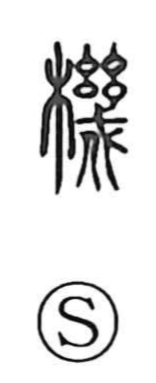

機

Kun: hata | On: ki
machine ・ mechanism ・ device ・ function ・ loom
Explanation
機 is a phono-semantic character built on the phonetic幾 (ki). Shirakawa explains 幾 as a pike (戈) adorned with thread-like tassels, a ritual implement believed to repel malign forces; with it, one could probe what was hidden and inquire into it. From this sense of empowered investigation and capability, 機 comes to name implements endowed with a shikake—mechanisms and contrivances—including spring-driven devices and the workings referred to in expressions like 機能 (function). Among traditional machines, the loom (織機) stands as a representative example.